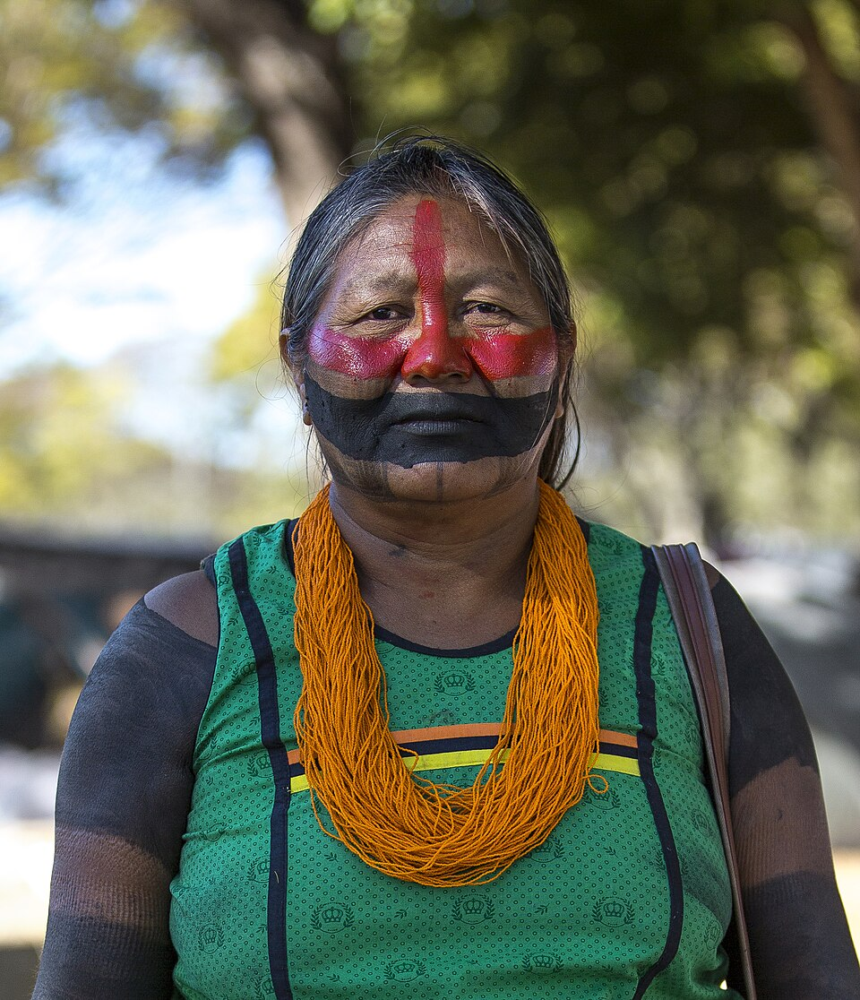
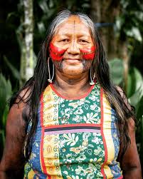
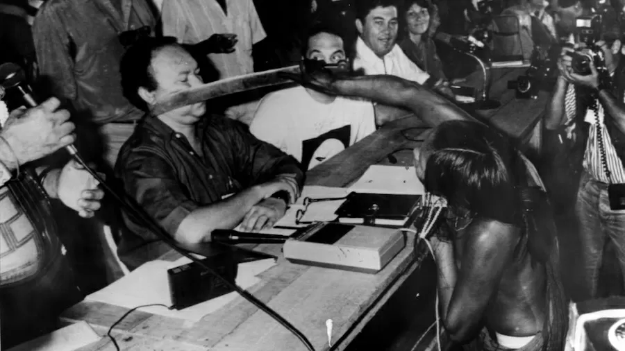
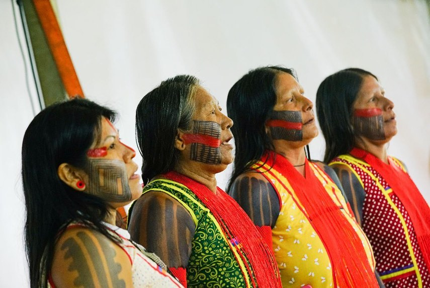
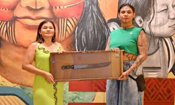

1966
Nascimento aproximado de Tuíre Kayapó na Floresta Amazônica, no território Kayapó. Cresce inserida nos saberes ancestrais de seu povo, aprendendo a importância da floresta para a sobrevivência e a espiritualidade Kayapó.

“A verdade dos povos indígenas ecoa como resistência.”
Tuíre Kayapó
Foto: Protássio Nêne / Estadão Conteúdo.
Trajetória inicial: origens, formação e engajamento na defesa territorial

Foto: Katie Maehler / APIB Comunicação. Licença: Creative Commons Attribution-Share Alike 2.0.
Tuíre Kayapó nasceu na Floresta Amazônica, no coração do território do povo Kayapó, localizado no estado do Pará. Desde sua infância, cresceu inserida nos saberes ancestrais de seu povo, aprendendo a ler a floresta, a compreender seus ciclos e a respeitar as relações que seu povo mantinha com a terra há milhares de anos. Seu povo, os Kayapó, são conhecidos por sua organização social sofisticada, sua capacidade estratégica e sua profunda conexão com a biodiversidade amazônica. Tuíre herdou essa herança de resistência e sabedoria, desenvolvendo-se como mulher guerreira e liderança política dentro de sua comunidade desde jovem.
Tuíre ganhou destaque internacional ao participar de mobilizações importantes pela proteção da Amazônia, especialmente na histórica Conferência das Nações Unidas sobre o Meio Ambiente de 1992 no Rio de Janeiro, onde sua presença e seu discurso tocaram o coração de milhões de pessoas em todo o mundo. Desde então, tornou-se porta-voz do povo Kayapó, lutando contra a invasão de garimpeiros ilegais, a exploração madeireira predatória e projetos de desenvolvimento que ameaçam seu território e sua vida. Sua atuação combina conhecimento tradicional com estratégias modernas de comunicação, alcançando audiências globais com suas denúncias sobre destruição ambiental e violação de direitos indígenas. Mesmo enfrentando ameaças constantes, criminalização e tentativas de silenciamento, Tuíre permanece firme em sua missão de proteger a Amazônia e garantir o futuro de seu povo.
Nascimento aproximado de Tuíre Kayapó na Floresta Amazônica, no território Kayapó. Cresce inserida nos saberes ancestrais de seu povo, aprendendo a importância da floresta para a sobrevivência e a espiritualidade Kayapó.
Tuíre começa a participar de mobilizações e assembleias dentro de sua comunidade. Sua inteligência política e sua capacidade de comunicação a destacam como potencial liderança. Participação em primeiros movimentos de resistência contra invasões de território.
Tuíre participa do Encontro de Lideranças Indígenas da Amazônia, onde questões sobre o futuro da floresta e a defesa territorial ganham visibilidade. Seu engajamento e sua voz ganham destaque entre os participantes.
Tuíre Kayapó participa da Conferência das Nações Unidas sobre o Meio Ambiente (ECO 92) no Rio de Janeiro. Seu discurso emocional e poderoso toca o coração de delegados e espectadores ao redor do mundo, tornando-a símbolo internacional da luta indígena.
Tuíre consolida sua liderança junto ao povo Kayapó e em movimentos indígenas nacionais. Continua lutando contra invasões de garimpeiros e exploração madeireira. Participa de conferências internacionais sobre clima e direitos indígenas.
Tuíre permanece como liderança ativa na defesa territorial Kayapó. Utiliza meios de comunicação modernos para denunciar ameaças à sua floresta. Participa de seminários internacionais sobre mudanças climáticas e proteção ambiental.
Continua em primeira linha da luta contra o garimpo ilegal, a exploração madeireira e projetos que ameaçam o território Kayapó. Sua voz permanece como referência global para a defesa da Amazônia e dos direitos indígenas.
Tuíre Kayapó permanece como símbolo vivo da resistência indígena amazônica, inspirando movimentos de defesa ambiental e de direitos humanos em todo o mundo.

Foto: Tuíre Kayapó — via Acervo de Movimentos Indígenas Amazônicos
Tuíre Kayapó é extraordinária porque transformou a voz de seu pequeno povo em uma voz global que ecoa nos fóruns internacionais de poder. Em um mundo onde as indústrias predatórias frequentemente silenciam as vozes indígenas, Tuíre se recusou a ser silenciada. Seu discurso na ECO 92 demonstrou que palavras autênticas, carregadas de sabedoria e convicção, têm o poder de despertar consciências mesmo entre os mais poderosos. Ela conectou a sabedoria ancestral Kayapó com a urgência climática global, mostrando que povos indígenas não são apenas vítimas, mas protagonistas de soluções.
O que torna Tuíre ainda mais notável é sua coragem ao enfrentar estruturas criminosas de exploração ambiental. Ela enfrenta garimpeiros armados, madeireiros predadores e políticos corruptos com a mesma firmeza com que seus ancestrais enfrentaram conquistadores. Sua presença em conferências internacionais, seus discursos diretos e sua denúncia incisiva demonstram que mulheres indígenas são pensadoras estratégicas, comunicadoras potentes e lideranças políticas de primeira ordem.
Além disso, Tuíre desafiou narrativas que tentavam invisibilizar mulheres indígenas ou reduzi-las a vítimas passivas. Ela provou que mulheres indígenas são guardiãs da floresta, estrategistas da resistência e porta-vozes de um futuro diferente. Sua trajetória mostra que a defesa da Amazônia não é questão apenas ambiental, mas de justiça social, de respeito aos direitos humanos e de reconhecimento da sabedoria ancestral. Por tudo isso, Tuíre não é apenas uma liderança indígena importante, mas um ícone global da luta pela vida e pela dignidade.
Influência sobre políticas ambientais, direitos indígenas e consciência ecológica global.
O legado de Tuíre Kayapó está fundamentalmente inscrito na forma como o mundo começou a compreender a urgência da proteção amazônica. Seu discurso na ECO 92 marcou um antes e um depois na história do ambientalismo global — pela primeira vez, uma mulher indígena tinha a oportunidade de falar diretamente ao mundo sobre a importância de sua floresta. Tuíre demonstrou que povos indígenas não deviam ser apenas consultados sobre projetos que afetavam seus territórios, mas que deveriam estar nos centros de decisão. Seu exemplo abriu caminhos para que outras mulheres indígenas ganhassem visibilidade e voz em fóruns internacionais.
Além disso, Tuíre consolidou a compreensão de que a defesa da Amazônia é inseparável da defesa dos povos indígenas. Sua luta mostrou que garimpeiros ilegais não apenas destroem a floresta, mas cometem genocídio contra povos indígenas através da disseminação de doenças, violência e destruição territorial. Seu ativismo contribuiu para que organizações internacionais começassem a reconhecer povos indígenas como protagonistas da proteção ambiental. Hoje, Tuíre Kayapó permanece como símbolo vivo dessa resistência, sua presença contínua em primeira linha de defesa territorial servindo como inspiração para novos movimentos de proteção ambiental e de direitos humanos. Seu legado encoraja que mulheres indígenas ocupem espaços de poder e que suas vozes sejam não apenas ouvidas, mas centrais nas decisões que determinam o futuro do planeta.
Fotos e registros históricos.

Tuíre Kayapó em um gesto histórico de resistência, ao encostar seu facão no rosto de um representante da Eletronorte durante o 1º Encontro dos Povos Indígenas do Xingu, em Altamira, em 1989. A imagem tornou-se símbolo da luta indígena contra a construção da Usina de Belo Monte e da defesa dos territórios originários.
Foto: Protássio Nêne / Estadão Conteúdo.

Tuíre Kayapó ao lado de mulheres de diferentes gerações do povo Kayapó durante a Marcha das Mulheres Indígenas, em Brasília, simbolizando a continuidade da luta feminina indígena pela defesa dos territórios, da ancestralidade e dos direitos dos povos originários.
Foto: Juliana Pesqueira / ANMIGA.

Inauguração da exposição permanente em homenagemA Tuire Kayapó, na Casa Ikeuara da Amazônia, em Belém. A mostra preserva artefatos pessoais e celebra o legado da liderança Kayapó como símbolo da resistência indígena e da defesa da Amazônia.
Foto: Divulgação / Bacana News.
Livros, artigos e documentos históricos.
Registra o falecimento de Tuíre Kayapó e resume sua importância como liderança indígena, defensora dos direitos dos povos indígenas e da proteção das florestas. Link: https://www.gov.br/funai/pt-br/nota-de-pesar-tuire-kaiapo
Fonte para dados sobre nascimento em Kokrajmôrô, morte aos 57 anos, gesto de 1989, atuação no Xingu e protagonismo das mulheres Kayapó. Link: https://www.isa.org.br/noticias-socioambientais/nota-de-pesar-pelo-falecimento-de-tuire-kayapo-lideranca-feminina
Fonte sobre sua atuação na Terra Indígena Las Casas, luta contra Belo Monte, defesa da floresta e tratamento contra câncer. Link: https://www.socioambiental.org/noticias-socioambientais/campanha-busca-doacoes-para-tuire-kayapo-que-luta-contra-o-cancer
Contextualiza o Encontro de Altamira de 1989, o gesto de Tuíre e a oposição indígena aos projetos hidrelétricos no Xingu. Link: https://acervo.socioambiental.org/acervo/noticias/em-altamira-indigenas-do-para-declaram-guerra-belo-monte
Relato de memória sobre a preparação e a repercussão do Encontro de Altamira e do gesto de Tuíre Kayapó. Link: https://acervo.socioambiental.org/acervo/noticias/o-primeiro-empate-de-belo-monte
Fonte sobre a liderança de mulheres Kayapó, incluindo Tuíre como cacica na Terra Indígena Las Casas. Link: https://pib.socioambiental.org/pt/Mulheres_meb%C3%AAng%C3%B4kre_kayap%C3%B3%3A_conquistando_novos_espa%C3%A7os
Perfil sobre a trajetória de Tuíre, sua liderança feminina, o gesto de Altamira e iniciativas de autonomia das mulheres Kayapó. Link: https://kayapo.org/tuire-kayapo/
Registra a exposição permanente dedicada a Tuíre Kayapó na Casa Ikeuara da Amazônia, com acervo, objetos pessoais e memória de sua luta. Link: https://www.portalcultura.com.br/pt-br/exposicao-em-belem-celebra-o-legado-da-lider-indigena-tuire-kayapo
Conheça outras trajetórias marcantes da luta por justiça e transformação social.

Foto: John Mathew Smith / www.celebrity-photos.com, via Wikimedia Commons.
Simbolo da luta contra a segregação racial nos Estados Unidos e referência mundial em coragem civil.
Saiba mais
Imagem: representação de Bartolina Sisa em cédula boliviana — via Banco Central da Bolívia.
Estrategista quilombola cuja resistência ajudou a marcar a luta negra por liberdade no Brasil lorem.
Saiba mais
Imagem: representação de Bartolina Sisa em cédula boliviana — via Banco Central da Bolívia.
Intelectual fundamental para os debates sobre feminismo negro, cultura e desigualdade racial no Brasil.
Saiba mais
Imagem: representação de Bartolina Sisa em cédula boliviana — via Banco Central da Bolívia.
Liderença indigêna e jurista que ampliou a presença dos povos originários nos espaços de decisão.
Saiba mais